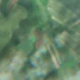
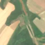

1,6 ha · Floriile, com. Aliman
văzută schimbată prima dată pe 10 iun. 2026


Autorizația cea mai apropiată nu acoperă tăierea: schimbarea cade în afara parcelei autorizate.
APV 2600120600030 · Ocolul Silvic Dunărea De Jos, la 363 m
Terenul: pădure de stat, după amenajamentul silvic publicat.
Ce se vede în poze: În poza detaliată zona marcată era acoperită de pădure deasă. În poza «după» aceeași zonă apare ca un petec golaș, maro-roz, care se vede clar pe fondul pădurii verzi din jur, deci copacii par tăiați.
în arie protejată: Dumbrăveni - Valea Urluia - Lacul Vederoasa, Aliman - Adamclisi